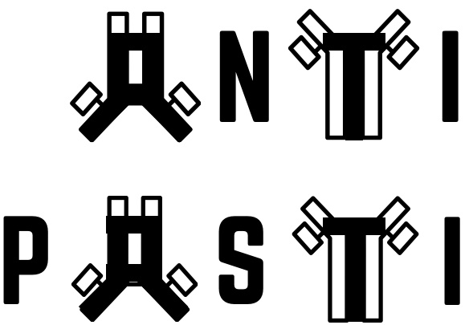

Welcome to ANTIPASTI’s documentation!
About
ANTIPASTI (ANTIbody Predictor of Affinity from STructural Information) is a Deep Learning model that predicts the binding affinity of antibodies from their three-dimensional structure. The repository is on GitHub.
You can follow the example notebooks to learn how to use the core functionality of ANTIPASTI
If you have already read our paper, you might want to proceed with the Installation or the Tutorial.
Warning
Please read the pathological list in any notebook to see which complexes have been excluded (more details can be found in the ANTIPASTI paper).
Contributing
Feel free to read the instructions. You can also contact the code author Kevin Michalewicz.
Contents
Last build of this documentation: Nov 08, 2024.